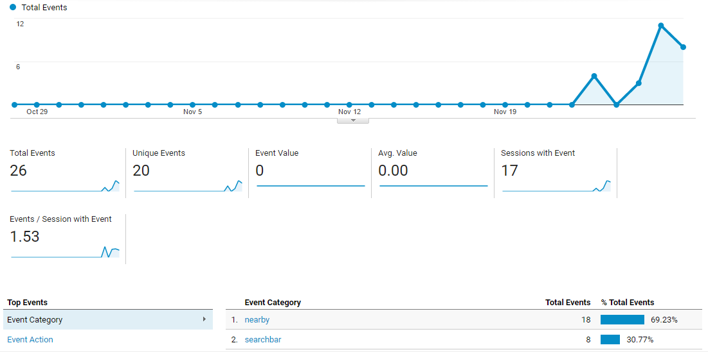
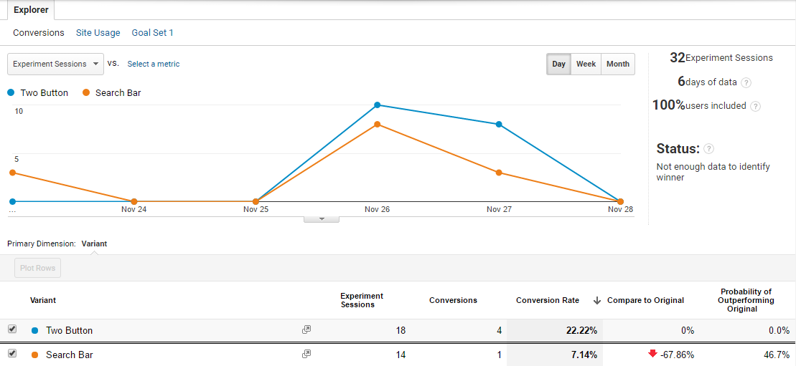
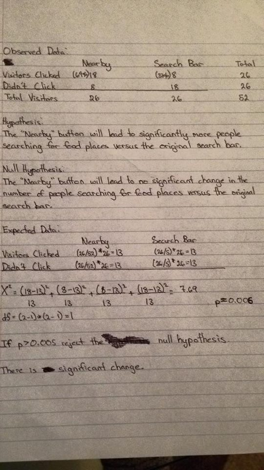

ROLES
Essentially for this project, I led my group for both UX/UI and the development of the web app. I managed my group and handled most of the coding, as well as the design.
TOOLS
Storyboards, paper prototypes, Sublime Text 3, Bootstrap, Github, Heroku.
CHALLENGE
Choosing a place to eat can be challenging, especially when you're with friends. It can be difficult to pick a place or even narrow down a type of food or restaurant to try out. You may also feel pretty adventurous and want to try something different but don't know where to start. With so many options to choose from, it can be overwhelming.
NEEDFINDING
During a group activity in class, we discussed possible needs when exploring new food places. With 2 other groups and mine, we found that it's a common problem to have a difficult time choosing a place to eat, especially when you're with friends. People often procrastinate or stay stagnant when trying to choose somewhere to eat, and it's very common to hear "I don't know, whatever you want" which drives the difficulty in trying to pick a place. There seems to be a need for something that may ease the difficulty of choosing places to eat, in ways that Yelp and Google cannot.
TARGET AUDIENCE
We felt that our target audience is anyone and everyone. Moreso, people willing to try new things and explore out of their comfort zone than choosing to eat at the same places over and over. We believe our target audience would most likely be millenials with devices who enjoy eating food and trying new things, possibly spontaneous and extroverts but not excluding introverts and people who prefer structure and planning in their lives.
DESIGN PROCESS
Initially in this class, we decided to go with an app for route planning that gives you landmarks and restaurants to check out on your entered driving route, to let you explore more of the area you're going to be driving in. We got mixed feedback from our heuristic evaluations as well as paper prototyping and wizard of oz web app prototyping, as well as we were unable to properly utilize the Google Maps API to function how we want it to operate for our app, so we had to pivot our design past halfway through the quarter. Chewsr became the final design we came to. With the minimal amount of time at our disposal so late in the quarter, we had to forego the storyboarding, paper prototyping, and user testing/evaluations for this app. We didn't have enough time other than going straight into coding our web app. Being in a group of 3 who are all cognitive science majors with no experience with coding, we utilized a code pen from codepen.io for the randomizer function, and tried to keep it highly simple by changing background colors and implementing buttons that simply link to the other pages. We also utilized codepen for the button styles and the drop down menu, since we did not know how to code anything like them, nor had enough time to learn how to code them. We kept it stupid simple and plain, as plain functionality was what we needed just to meet the requirements. We still used the Google Maps API to gather restaurant data, however, we had to hardcode the location because we couldn't figure out how to let it detect a users location. We decided to preset the location to UCSD, and the preset food categories are all based on restaurants within a 10 mile radius of campus.
DATA & TESTING
We ran some in person user testing to gather information to help drive our design further. From our user testing, we found that the users liked the clean and simple design and fit well on mobile. They enjoyed that it doesn't require too much work and is straight to the point. However, we found that the constructive criticism we received was that it should contain pictures and more details on the restaurants, as well as ratings. Although it was clean, it was missing details that made the users confused. They weren't sure if it was already using the current location or not either. We also ran A/B testing to figure out if a search bar for location is better than a button that automatically searches your current location.



We did a Chi squared statistical test to see whether there is a significant difference between a search bar for location or automatic current location button. Since our χ2 value is 7.69, we have a value of p that is 0.006. Since p < 0.05, we can reject the null hypothesis. Therefore, we can conclude that there is a significant change.
The statistical findings show a significant difference from using the “Nearby” button compared to the search bar and made the decision very clear to use which feature. Due to the fact that there was not enough people who used the app itself, the statistical data can be understood as inconclusive because with a larger pool of people who use the app, the better the results will represent the general users. However, with the information we have now, the null hypothesis was tested as false, proving that a significant difference exists from the two. From our results, we decided to remove the search bar entirely and automatically use the user’s current location. In the future, we would like to test out how many people would change the distance radius using the slider.
CONCLUSIONS
If we had more time, we would've removed the search bar and automatically use the users current location,
revise so that 2 home page buttons redirect to either the filters page or a random results page from one of the categories,
revise “About” page to clearly instruct users how to use the app,
move distance radius to different page due to visually observed minimal use of it,
create hamburger menu for other pages,
rename “Spin Again” to “Chews Again” for more branding, as well as being able to create a logo, add more information in search results and chosen location, and add more food categories. The biggest takeaway from this project was that not only should we have not tried too much on our first design, was that we should've pivoted earlier. We were too caught up in trying to learn API and how to code something too advanced for our skills. If we had taken a step back to assess our situation and realized that what we had hoped to accomplish was not working and wasted our time, we could've developed and designed Chewsr to what it should've been, given that we had more time.